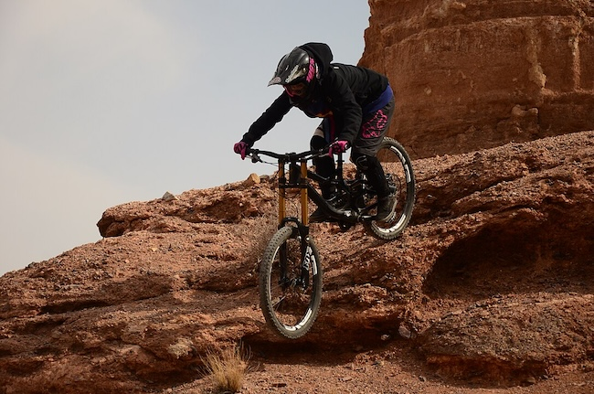

Pictures
resize file - so page can load faster. cost efficient.
Engagement Activity
What kind of photos are good to encode using JPEG?
JPEGs are good to encode photos with large file sizes so that they can be compressed and easier to use. It also helpes in optimizing load times of your webpages with multiple photos. The downsize is that this is achieved by sacrificing image quality. Quality gets lower the more you encode the photo.
What kind of photos are good to encode using GIF?
GIF format are good for encoding cartoon images or animations. This file format also allows for moving pictures to be created. The best photos to use for creating GIFs are photos with less colors. More colors sometimes complicate the compression of the image.
What is unique about the PNG format?
The unique thing about the PNG format is the presence of the alpha channel which allows us to have transparency in our photos. It gives us the chance to put photos on our webpage without the white space included but only the subject.
How do you resize your photo to the size it should be displayed?
We can resize our photos multiple ways. 2 of common ways are through the use of an editing software to change the dimensions of the photos. Another is through functions in CSS.
Why should you resize photos using photo editing software instead of resizing it using CSS?
It is best to resize the photo itself using a photo editing software so that users who visit our website will only download the lower sized photo in terms of file size. Resizing through CSS only changes the photo's appearance in the web page but does not change the actual source file that users will have to download and cache when visiting our site.